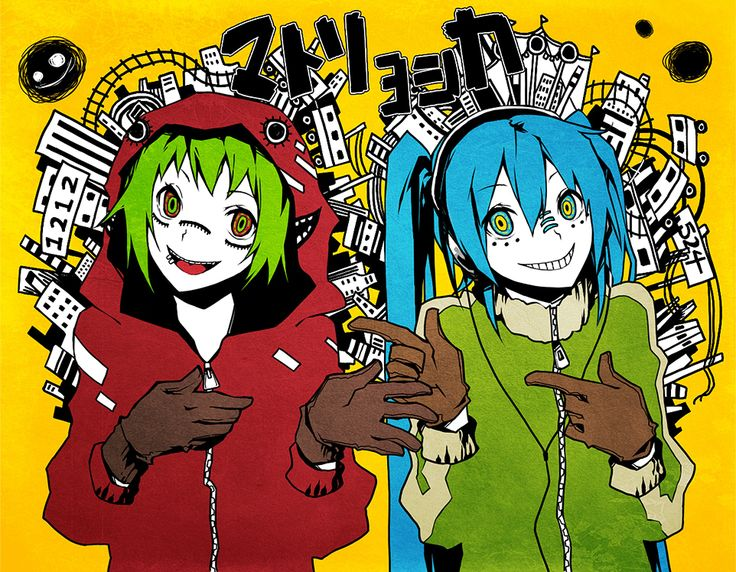
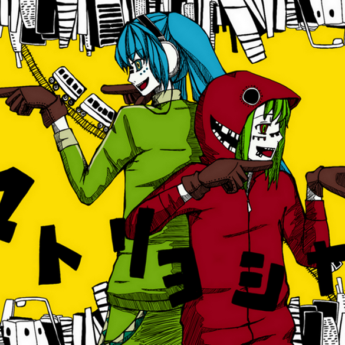

About the Song
"Matryoshka" is a popular Vocaloid song released in 2010. It's known for its fast tempo, catchy melody, and nonsensical yet intriguing lyrics.
The song is sung by Hatsune Miku and Gumi, two of the most popular Vocaloid voicebanks.
Lyrics
Here are some excerpts from the song:
考え過ぎのメッセージ誰に届くかも知らないで
(Kangae sugi no messeji dare ni todoku kamo shiranai de)
Messages I've put too much thought into,
I don't even know if they'll reach anyone.
You can find the full lyrics https://vocaloidlyrics.fandom.com/wiki/Vocaloid_Lyrics_Wiki.
Here are some fanarts about the song
 Music Video
Check out the official music video here: